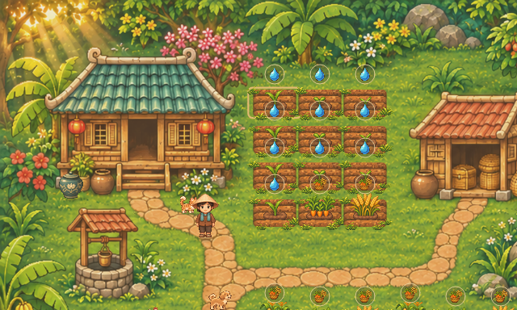
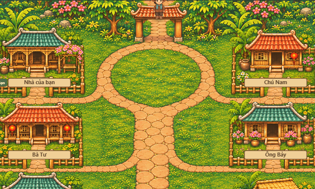
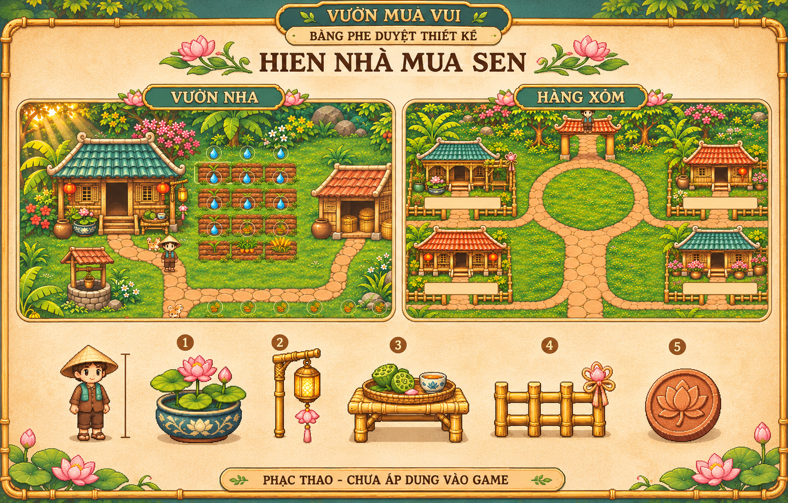

P3.1 · Chờ duyệt · Chưa áp dụng vào gameHiên nhà mùa sen
Sen hồng dịu, gốm xanh ngọc, tre ấm. Giữ cảnh quan và lối đi; tập trung điểm nhấn ở hiên/cổng. Đây là trang đối chiếu mỹ thuật, không phải bản game mới.
1. Canvas game hiện tại

Vườn nhà · 640×384 · Mốc bố cục/tỷ lệ cần giữ.
Hàng xóm · 640×384 · Sáu nhà/trang, tối đa 12 người.2. Hướng mỹ thuật đề xuất

Concept tham chiếu Canvas, chưa xuất sprite. Dải vật phẩm là hình phóng để duyệt chi tiết.Chốt chậu sen và đèn tre trước; họa tiết trụ rào và dấu kỷ niệm là điểm nhấn nhỏ. Bàn quà là phương án tùy chọn. Chi tiết đèn treo/điểm đặt cần kiểm trên Canvas trước khi xuất production, không áp nguyên ảnh concept thành nền.
3. Những điều phải giữ
- Đường đi, cửa nhà, ruộng và tỷ lệ nhân vật.
- Năm bậc nhà theo tài sản; biển tên chủ nhà vẫn hiển thị bằng code.
- Mỗi điểm đặt chỉ một món, không tự di chuyển đồ người chơi đã đặt.
- Thử/hủy không mất tài nguyên. Không thêm thưởng hoặc cơ chế trả phí trong bản này.
Xem phạm vi, ràng buộc và tiến độ đầy đủ